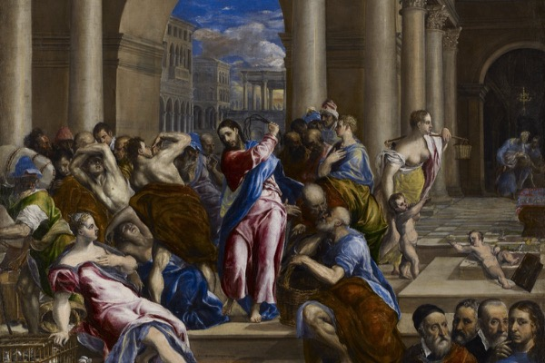
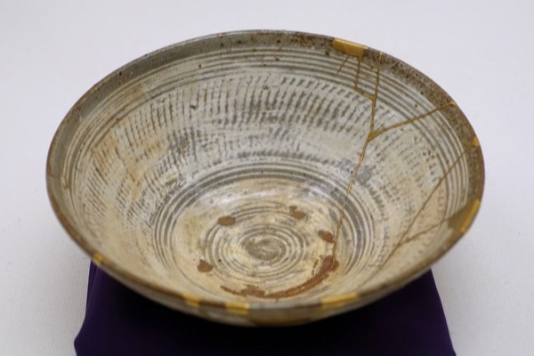

-

Meditation, Mapped
Eleven practices, from mindfulness to dhikr, ask you to do different things. Compare their aims and health evidence, including the limits of the trials, then try a short attention exercise.
-
The Chemical Path
Huxley took mescaline and saw ordinary objects differently. Follow his explanation alongside Indigenous traditions and modern clinical trials, where a meaningful experience and a lasting treatment benefit are separate questions.
-
William James
James collects accounts of conversion and mystical experience, then asks what they do in a life. Follow his judgments alongside the limits of his cases and his own belief in a spiritual reality.
-
Emmet Fox
Fox reads Jesus's teachings as instructions for changing thought. His book helped early AA members, but its promise that right thinking changes external events goes beyond the evidence for psychological treatment.
-
The Perennial Philosophy
Huxley assembles a shared spiritual philosophy from selected mystics. Read five passages in context, where Buddhist accounts of self and Christian accounts of union complicate his claim of agreement.
-
Viktor Frankl
Frankl remembers imagining his wife during forced labor. His account asks how meaning can sustain a person, without establishing why some prisoners survived and others were murdered.
-
The Modern Teachers
Watts, Ram Dass, Krishnamurti, Gurdjieff, and Tolle give different accounts of self and practice. Compare what each asks you to accept, and what a teacher's conduct can tell you about their authority.
-
When a Path Becomes a Cage
A group's unusual beliefs tell you little about whether members can leave. Five cases examine threats, secrecy, control, and violence, separating court findings from allegations and competing accounts.
-

When a Path Becomes a Business
A fee can support a teacher or fund a promise that never delivers. Examine Landmark, A Course in Miracles, prosperity preaching, wellness sales, and TM through their claims and financial arrangements.
-

The Spirituality of Imperfection
Ernest Kurtz and Katherine Ketcham draw on recovery and religious stories to explore admitting limits. Read their account of humility and fellowship, with attention to what the stories can and cannot establish.